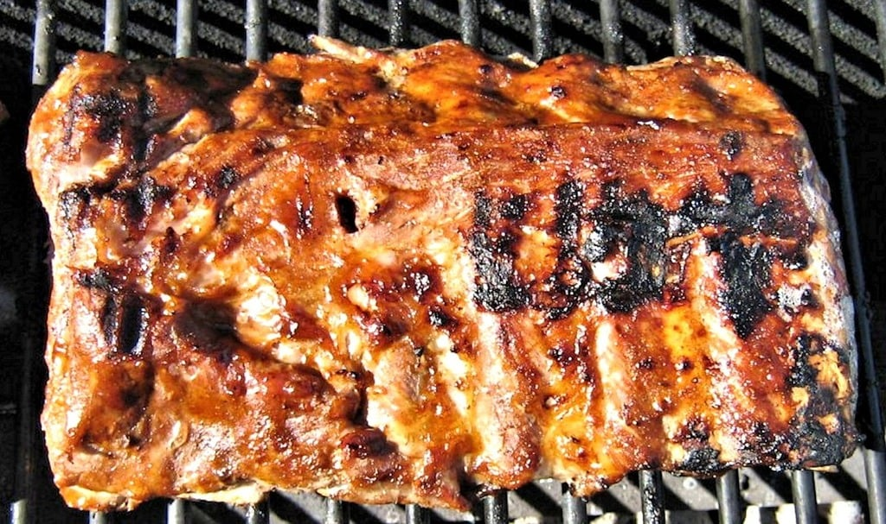

Baby Back Ribs

Description
An easy recipe for top-tier tender ribs cooked on the grill!
Ingredients
- 1 tbsp ground cumin
- 1 tbsp chili powder
- 1 tbsp paprika
- Salt and pepper
- 3 lbs baby back pork ribs
- 1 cup barbeque sauce
Steps
- Preheat a gas grill for high heat, and lightly oil the grate.
-
Combine cumin, chili powder, paprika, salt, and pepper in a small jar;
close lid and shake to mix.
- Trim membrane sheath from back of each rack.
-
Sprinkle rub onto both sides of the ribs as desired. Do not thrououghly rub.
-
Place aluminum foil on lower rack to capture drippings and prevent flare-ups.
Lay ribs on top rack of the grill, reduce gas heat to low and close the lid,
leave for 1 hour.
- Brush ribs with barbeque sauce, and grill for 5 more minutes.
- Serve ribs as a rack or cut individually.
Home